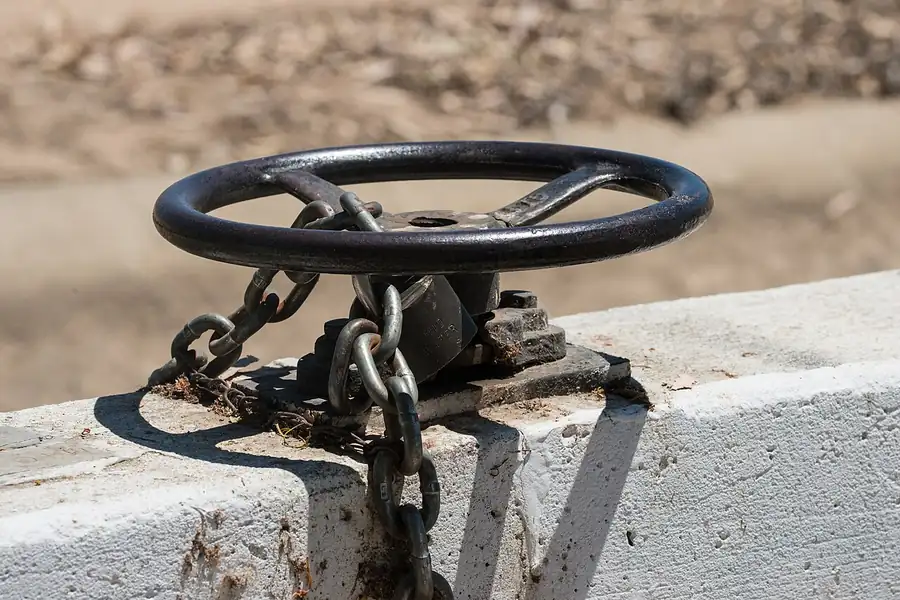

Our story
The Ceres Seventh-day Adventist Church has been part of the Ceres community since [year]; FaithStreet lists 1952, unverified. Today we're a multicultural, multigenerational; confirm description congregation that loves to study the Bible, pray together, and put our faith to work serving our neighbors.
We are part of the worldwide Seventh-day Adventist Church, a Protestant Christian church with more than 22 million members in nearly every country confirm current figure, and a member congregation of the Central California Conference.
Add 2–3 sentences of local history: building, milestones, memorable moments
Faith in action
Serving others is at the heart of who we are. Our Community Services team runs a monthly food bank and clothing closet, and we host Second Harvest's Mobile Fresh produce distribution for anyone who needs it. Members also lead Pathfinder and Adventurer clubs, prayer ministry, and fellowship for seniors through Young at Heart.
Community Services
Illustrative photo: irrigation headgate, Modesto Irrigation District. USDA photo, public domain (Wikimedia Commons).
A farm town, and proud of it
Ceres was laid out along the railroad in the 1870s, when wheat was king. Its name came in 1871 from a grain warehouse by the depot. In 1887 farmers here helped organize the Turlock Irrigation District, California's first, and by 1900 canal water was reaching fields near Ceres.
Like the farmers around us, we believe in honest work, and in the weekly rest God built into it: “in earing time and in harvest thou shalt rest” (Exodus 34:21).
Pastor search in progress
We're currently seeking a new pastor, working with the Central California Conference. During this season our elders, church board and members are leading worship, Bible study and ministries, and guest speakers bring the Sabbath message each week. Our elders and church family warmly welcome you, and would love to pray with you or answer any question.